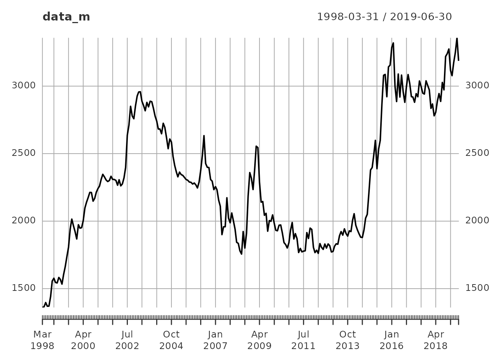
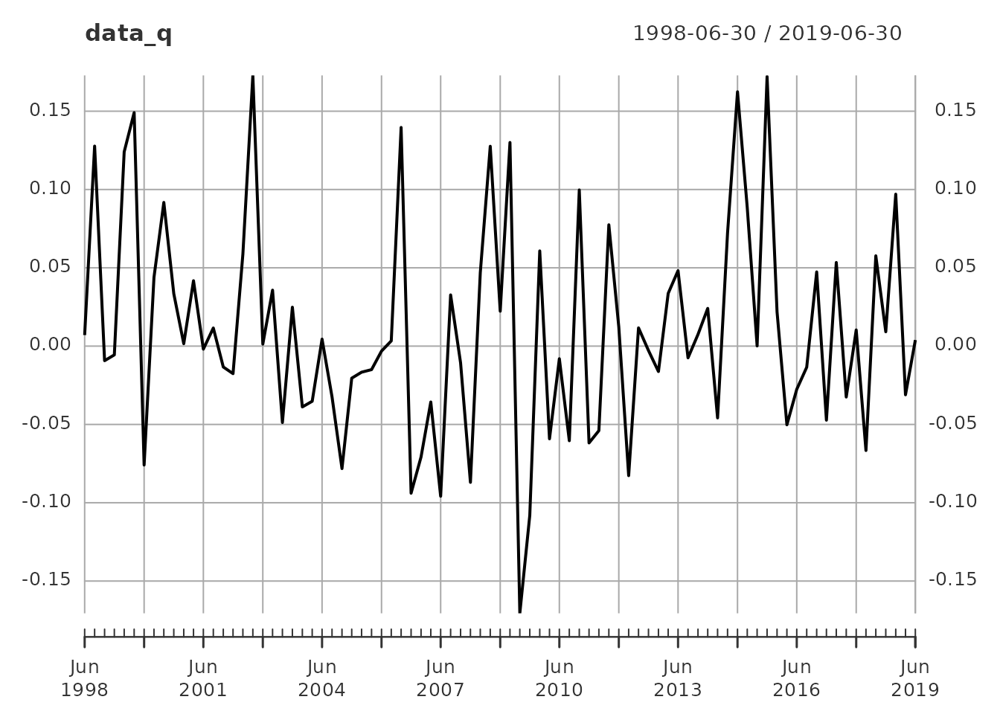

The cITMre library—Colombian Index Tool (Market Rate Exchange)—responds to the researcher’s economics and financial sciences needs to use the colombian Representative Market Rate Exchange. This package presents a practical solution for downloading the RMRE database.
The tool allows us to obtain:
- Download the data series in daily, monthly, quarterly, and half-yearly frequencies.
- Can split the time series through start and end function
- Can transform the data set in log returns or level
- Can make a Dynamic graph through Plotly, or if is your preference can make a normal plot.
Motivation
Obtaining information from the Colombian RMRE is relatively straightforward; the search in the official state database Portal de Datos Abiertos <www.datos.gov.co> allows the data to be downloaded in .xls or .csv. In economics or financial sciences, obtaining and loading this information into R can be frustrating, forcing many users to create a routine function linked to the database limited to the user’s expertise. Thus, this tool aims to facilitate both the loading of data and the use of essential RMRE time series analysis tools.
Note: The information discounts weekends and holidays; the function approximates the nearest trade date.
Applied Example
If you want to use citmre, perform the package
installation process using install.package("citmre") or
through CRAN and load the library(citmre) library. Once the
package is installed, use the rmre_data() function to
obtain the total RMRE series (the Colombian state has RMRE data since
1991-12-02); the data loaded is an XTS series. This information can be
plotted through plot().
library(citmre)
head(rmre_data())
#> rmre
#> 1991-12-02 643.42
#> 1991-12-03 639.22
#> 1991-12-04 635.70
#> 1991-12-05 631.51
#> 1991-12-06 627.16
#> 1991-12-09 638.06
plot(rmre_data())In economic or financial research, it is not necessary to take the
whole time series; use start_date and end_date
under the format “YYYYY-MM_DD” to obtain a specific start and end date.
For example, we want to get the RMRE from March 18, 2005, to June 26,
2019, in an object called data simplifying function
result.
data <- rmre_data(start_date = "2005-03-18", end_date = "2019-06-26")
head(data)
#> rmre
#> 2005-03-18 2374.46
#> 2005-03-22 2371.43
#> 2005-03-23 2361.78
#> 2005-03-28 2382.30
#> 2005-03-29 2397.25
#> 2005-03-30 2393.32
tail(data)
#> rmre
#> 2019-06-18 3286.63
#> 2019-06-19 3264.98
#> 2019-06-20 3248.91
#> 2019-06-21 3202.01
#> 2019-06-25 3191.17
#> 2019-06-26 3187.15
plot(data)In some research, the historical volatility is expected to be
analysed for advanced econometric or financial studies. It is possible
to use the function log_return=TRUE to change the series to
log return based on the formula: \(lr(RMRE) =
Ln(\frac {RMRE_t}{RMRE_{t-1}})\), in Default the series is
presented in level data.
data_log <- rmre_data(start_date = "2005-03-18", end_date = "2019-06-26", log_return = TRUE)
head(data_log)
#> log_return
#> 2005-03-22 -0.001276894
#> 2005-03-23 -0.004077577
#> 2005-03-28 0.008650836
#> 2005-03-29 0.006255839
#> 2005-03-30 -0.001640724
#> 2005-03-31 -0.007061122
tail(data_log)
#> log_return
#> 2019-06-18 0.004858694
#> 2019-06-19 -0.006609087
#> 2019-06-20 -0.004934082
#> 2019-06-21 -0.014540818
#> 2019-06-25 -0.003391117
#> 2019-06-26 -0.001260520
plot(data_log)On some occasions, economic or financial variables do not necessarily
use the same time-frequency of the daily series as in the RMRE.
Colombia’s GDP (Gross Domestic Product) is quarterly; therefore, the
RMRE daily series must be transformed into a quarterly one. The
frequency function displays the RMRE series in monthly
(12), quarterly (4) and half-yearly (2) series. By default, the daily
series will be (365). Frequencies can also be transformed to
log_return
The type function can approximate the series on mean or
last date data. When
type = "mean" is used, the series gets the average value of the series in frequency. Iftype
= “last_date” is used, the last data of the series is used in frequency.
By default, the type is set to last_date.
# Monthly RMRE
data_m <- rmre_data(start_date = "1998-03-18", end_date = "2019-06-26", frequency = 12)
head(data_m)
#> rmre
#> 1998-03-31 1360.26
#> 1998-04-30 1365.72
#> 1998-05-31 1397.07
#> 1998-06-30 1369.88
#> 1998-07-31 1370.65
#> 1998-08-31 1441.86
tail(data_m)
#> rmre
#> 2019-01-31 3115.70
#> 2019-02-28 3077.35
#> 2019-03-31 3174.79
#> 2019-04-30 3247.72
#> 2019-05-31 3357.82
#> 2019-06-30 3187.15
plot(data_m)
# Quarterly
data_q <- rmre_data(start_date = "1998-03-18", end_date = "2019-06-26", frequency = 4, log_return = T)
head(data_q)
#> log_return
#> 1998-06-30 0.007047287
#> 1998-09-30 0.127729415
#> 1998-12-31 -0.009300952
#> 1999-03-31 -0.005592383
#> 1999-06-30 0.124041672
#> 1999-09-30 0.149092737
tail(data_q)
#> log_return
#> 2018-03-31 -0.066645308
#> 2018-06-30 0.057674061
#> 2018-09-30 0.009156313
#> 2018-12-31 0.097025232
#> 2019-03-31 -0.031079434
#> 2019-06-30 0.003885612
plot(data_q)
# Half-year
data_s <- rmre_data(start_date = "1998-03-18", end_date = "2019-06-26", frequency = 2, type = "mean")
head(data_s)
#> rmre
#> 1998-06-30 1375.387
#> 1998-12-31 1493.306
#> 1999-06-30 1600.087
#> 1999-12-31 1916.123
#> 2000-06-30 1998.886
#> 2000-12-31 2176.997
tail(data_s)
#> rmre
#> 2016-12-31 2980.250
#> 2017-06-30 2921.711
#> 2017-12-31 2980.267
#> 2018-06-30 2849.155
#> 2018-12-31 3060.683
#> 2019-06-30 3187.564
plot(data_s)Finally, some researchers feel that displaying a dynamic graph
increases the analysis and learning methods, which is why the
plot_data option can display a Plotly line graph, allowing
the user to analyse the data through the Viewer (See https://plotly.com/r/line-charts/>). This option
works well with the other options of the rmre_data
function.
# Monthly RMRE
rmre_data(start_date = "1998-03-18", end_date = "2019-06-26", frequency = 12, plot_data = T)